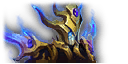

The Voidspire
6 Bosses • Opened March 17, 2026 • Mythic unlocked March 24 • A mechanics-first tier built around spatial control and coordinated execution.
Imperator Averzian
Hazelnuttygames — Imperator AverzianThe opener. A grid-control encounter where positioning decides everything.
- Keep Averzian away from claimed portal squares at all times — Imperator's Glory gives Averzian and nearby adds 75% damage increase and 90% damage reduction when within 10 yards of a claimed tile.
- Blackening Wounds: stacking debuff that reduces max HP by 4% per stack (20-second duration) — swap tanks at 8–10 stacks, not earlier.
- Adds naturally aggro the tank with the highest Blackening Wounds stacks — manage positioning so incoming adds don't aggro the off-tank unexpectedly.
- When Averzian claims a square, reposition immediately to prevent a line-of-three from forming — three in a row triggers March of the Endless, a wipe-level enrage.
- Dark Upheaval deals unavoidable periodic raid-wide Shadow damage throughout the fight — maintain sustained throughput, this is not a burst-reactive fight.
- Track Umbral Collapse soak assignments — exploding soak circles deal heavy split damage. Prepare cooldowns when soak headcount is low.
- Damage intensity increases as the arena fills with claimed squares — save a major cooldown for the late phase when grid pressure peaks.
- Keep everyone topped during Voidshaper kill windows when the raid briefly clusters for add positioning.
- Abyssal Voidshaper is always top kill priority — they cast Gathering Darkness to claim grid squares. Watch their energy bar: at 100 energy they convert into a far more dangerous Obsidian Endwalker. Kill before 100.
- Shadowguard Stalwart/Annihilator adds cast Pitch Bulwark — a large absorb shield on allies. Interrupt it immediately or it makes Voidshapers significantly harder to kill.
- Voidmaw adds apply a stacking shadow DoT and at low health run toward portals to heal — slow or CC them before they reach 35% HP.
- Place Umbral Collapse soak circles on top of Voidshapers to kill them and prevent grid claims — coordinate soak positioning with the tank.
- Never allow Averzian to complete a line of three claimed squares — communicate grid threats immediately.
- Blackening Wounds stacks build faster on Heroic — watch the debuff closely and swap earlier rather than riding the threshold.
- Abyssal Voidshapers generate energy faster — call energy levels at 70% so DPS can prioritize before conversion to Obsidian Endwalker.
- Communicate every reposition to the raid immediately — surprise tank movement disrupts Umbral Collapse soak assignments.
- Imperator's Glory empowerment range is punished harder on Heroic — keep Averzian further from claimed squares than on Normal.
- Dark Upheaval fires more frequently on Heroic — assign healing cooldowns to every other cast with no gaps.
- Umbral Collapse soak damage increased substantially — pre-heal soak groups before each Collapse. Under-healed soaks kill squishier players.
- Pre-position near soak zones before each Collapse cast — reaction time is too short to improvise on Heroic.
- Keep the raid above 80% entering each Dark Upheaval cast — Heroic damage punishes low health significantly.
- Abyssal Voidshapers reach 100 energy faster — Obsidian Endwalker conversions are more likely. Assign a dedicated energy watcher to call kill priority.
- Shadowguard Stalwart Pitch Bulwark shields are stronger on Heroic — interrupt immediately or Voidshaper kills slow enough to cause grid completions.
- Voidmaws move faster toward portals at low health — apply slows earlier, not after they start running.
- Grid completion pressure is significantly higher — assign a dedicated grid watcher to call line-of-three threats. DPS tunnel vision wipes the group.
- Void Fracture at 70% HP splits Averzian into a shadow copy — tank both copies in opposite arena halves simultaneously.
- The two copies cannot share a quadrant — if they converge they merge and wipe the group instantly.
- Communicate copy positions constantly via voice — the off-tank's repositioning must never push their copy toward yours.
- Defensives must be split between both tanks independently — no shared cooldown windows after the fracture.
- Both copies deal full melee damage to their respective tanks — two healing cooldowns must be staggered at the split, not combined on one tank.
- Split healer assignments per copy at the Void Fracture — one healer per tank group, no overlap.
- Umbral Collapse soaks continue during the fracture phase — assign soak coverage per arena half.
- Collapse both copies before they reach 25% individually or the surviving copy enrages permanently.
- Both copies must die within 5 seconds of each other — the survivor gains Void Ascendance (+300% damage per second) until it falls.
- Assign DPS kill teams per copy before the pull. Do not swap mid-fight unless your copy is far ahead on HP.
- Designate one HP caller per group to communicate the gap — start slowing your copy when the gap hits 8%.
- Use Heroism/Lust at the Void Fracture — this is the maximum window for synchronized simultaneous damage.
Vorasius
 Hazelnuttygames — Vorasius
Hazelnuttygames — Vorasius
A colossal predator. Void Breath is the defining mechanic — a sweeping beam that splits the arena with crystal walls. Kite Blistercreep adds into the walls to break them and maintain safe zones, or the beam wipes the group.
- Position Vorasius so his Void Breath sweeping beam does not cross the raid — strafe with the beam rotation rather than running through it.
- Ground Slam periodically creates crystal walls that divide the arena — each new set of walls increases Vorasius's damage output. Walls must be broken by kiting Blistercreep adds into them.
- Face Vorasius away from the raid at all times — his frontal attacks hit anyone in the arc.
- Reposition quickly after Vorasius leaps — never let the raid get hit by his landing orientation.
- Sustained Shadow damage from Void Breath dark energy radiates continuously — this is a throughput fight, not a reactive one.
- Damage ramps as crystal walls accumulate — save major cooldowns for later in the fight when wall count is highest.
- Keep the tank topped at all times — melee damage scales as the fight progresses.
- Keep the whole raid above 70% to meet health threshold checks on key abilities.
- Blistercreep adds must be kited into crystal walls to destroy them — do not kill Blistercreep directly. Kiting them into walls is the only way to clear the walls and maintain safe zones from Void Breath.
- Void Breath sweeps through the arena — stay in safe zones created by destroyed walls. Identify your safe zone before the beam fires.
- Each Ground Slam wave of crystal walls increases Vorasius's damage — prioritize Blistercreep kiting over boss DPS when walls are up.
- Save major damage cooldowns for windows when walls are cleared and safe uptime on the boss is maximized.
- Void Breath beam rotation speed increases on Heroic — strafe adjustments must be faster and more continuous. Do not stop moving during beam phases.
- Ground Slam crystal walls spawn more frequently — Blistercreep kiting cycles are shorter. Pre-plan kiting paths before each wave.
- Melee damage ramps faster as wall count increases — rotate defensives more aggressively in the second half of the fight.
- Never delay repositioning after Vorasius leaps — the landing frontal window is smaller and faster on Heroic.
- Void Breath dark energy ticks more frequently on Heroic — sustained throughput requirement increases across the entire fight.
- Crystal wall damage amplification stacks faster — save major cooldowns for the back half of the fight when wall pressure is highest.
- Keep the raid above 75% at all times — Heroic health thresholds are tighter on key abilities.
- Pre-heal the tank before each Ground Slam wave — the immediate melee spike after walls form is the primary tank death window.
- Blistercreep spawn rate increases on Heroic — more kite targets active simultaneously. Pre-assign kiting duty so DPS don't compete for the same add.
- Crystal walls deal more damage when not cleared quickly — Blistercreep kiting is the highest priority, never delayed for boss uptime.
- Void Breath safe zones are narrower on Heroic — communicate safe zone locations immediately when walls break. Do not assume the same zone each wave.
- Use Heroism/Bloodlust when walls are fully cleared — maximum safe uptime on the boss is only available in those brief windows.
- Void Breath on Mythic fires multiple beams simultaneously from different angles — safe zones are smaller and require precise positioning. Communicate safe zone direction to the raid immediately.
- Blistercreep adds gain a short damage reflection on Mythic when struck directly — kiting is the only valid interaction. Any direct damage to Blistercreep reflects to the attacker.
- Melee damage amplification from crystal walls escalates faster — defensives must be available for every Ground Slam wave, not just peak moments.
- Multiple simultaneous Void Breath beams create more sustained raid damage on Mythic — throughput cooldowns must be chained with zero downtime in the late fight.
- Blistercreep damage reflection means any accidental DPS on adds spikes personal health — be ready to spot-heal players who mis-target.
- Map the full cooldown roster to the Ground Slam wave timeline before the pull — improvised cooldown usage on Mythic runs dry before the kill.
- Blistercreep reflect damage on Mythic means zero direct strikes on them — kite only. Assign dedicated kiters and ensure all other DPS know to never target Blistercreep directly.
- Multiple Void Breath beams require coordinated safe zone movement — the raid must move as a group, not independently.
- Use Heroism/Bloodlust at the Mythic wall-clear window — it is the only moment of full uptime and the DPS check of the fight.
Fallen-King Salhadaar

Hazelnuttygames — Fallen-King SalhadaarA significant complexity spike. The Riftlabs machinery produces Concentrated Void orbs that must be intercepted before they reach Salhadaar. At 100 energy he enters Entropic Unraveling — 20 seconds of heavy raid damage where he takes 25% more damage. Maximize the vulnerability window.
- Position Salhadaar away from Concentrated Void orbs at all times — if an orb reaches him he gains Void Infusion, empowering him significantly.
- During Entropic Unraveling (100 energy), Salhadaar deals 58,000+ Shadow damage per second to all players for 20 seconds — use defensives at the start of every Unraveling window.
- Avoid standing in Torturous Extract puddles left after each Unraveling expires — they are persistent arena hazards.
- Taunt swap as needed and pre-stage defensives before each Entropic Unraveling cast.
- High throughput fight — Entropic Unraveling deals constant heavy raid-wide Shadow damage during each 20-second window. Plan major cooldowns around the energy cycle.
- Players who touch a Concentrated Void orb gain Void Exposure debuff — monitor and dispel where possible.
- Torturous Extract puddles shrink the safe healing area over time — call safe positioning proactively as puddles accumulate.
- Entropic Unraveling is the primary cooldown window — save major throughput cooldowns specifically for these windows.
- Concentrated Void orbs (from Void Convergence) are the top priority — intercept and destroy them before they reach Salhadaar. Any orb that reaches him grants Void Infusion and empowers the fight significantly.
- During Entropic Unraveling, Salhadaar takes 25% increased damage — this is your primary burst window. Stack all major cooldowns for these phases.
- Dodge large shadow beams cast during Entropic Unraveling — they deal lethal damage and are telegraphed briefly before firing.
- Avoid Torturous Extract puddles left after each Unraveling — they persist and reduce available space as the fight progresses.
- Void Convergence fires orbs more frequently on Heroic — orb interception pressure is significantly higher. Tanks must call gap openings earlier to allow DPS to reposition.
- Entropic Unraveling windows deal more damage per second and last slightly longer — use a major defensive at the start of every window, not mid-way through.
- Salhadaar gains Void Infusion from each orb that reaches him faster on Heroic — even one missed orb noticeably empowers the fight. Communicate missed intercepts immediately.
- Torturous Extract puddles expand over time on Heroic — deny the edges of the arena early or the viable tank movement space becomes severely limited.
- Entropic Unraveling damage per second is higher — a major cooldown is mandatory for every window, not just the first. Plan cooldown rotation before the pull.
- Orb interception failure compounds healing demand — each Void Infusion stack increases Salhadaar's damage output noticeably. Prioritize orb kills to reduce incoming damage pressure.
- Torturous Extract puddles shrink available positioning — keep the raid stacked in a predictable area and call movement paths as puddles accumulate.
- Coordinate dispel coverage during Unraveling windows — throughput demand is highest exactly when raid movement and dodging complicate healing.
- Concentrated Void orbs spawn faster on Heroic — intercept assignments must rotate more quickly. Pre-assign primary and backup interceptors for each wave.
- Orb interception windows overlap with Entropic Unraveling more frequently — interceptors must move without breaking their burst window mid-cast.
- Every Entropic Unraveling is a major DPS window (25% increased damage) — stack all cooldowns for these phases and do not waste them outside of Unraveling.
- Torturous Extract puddles are larger on Heroic — memorize safe corridor paths through the arena before the pull so movement during Unraveling doesn't cost DPS.
- Void Convergence now fires orbs in overlapping waves — multiple orbs are active simultaneously. Both tanks must communicate which orbs DPS can safely intercept versus which ones require tank repositioning.
- Entropic Unraveling now also applies a stacking movement slow to all players within 10 yards of Salhadaar — kite him continuously during Unraveling to maintain positioning.
- Void Infusion stacks on Mythic have a compounding damage increase — each missed orb makes the next Unraveling window significantly more lethal. Zero tolerance for missed intercepts.
- Pre-plan defensive cooldown usage across all Unraveling windows before the pull — improvised usage on Mythic results in running dry on later windows.
- Full cooldown timeline must be mapped before the pull — Mythic Unraveling windows are too punishing to address reactively. Assign specific cooldowns to specific windows.
- Torturous Extract puddles on Mythic deal damage to any player passing through them — establish fixed puddle corridors and enforce movement paths strictly.
- Simultaneous orb waves and Unraveling windows mean sustained high damage with no natural downtime — treat the entire fight as high-throughput, not only the Unraveling windows.
- Assign one healer as raid cooldown coordinator — call each cooldown usage aloud so no window is doubled or skipped.
- Multiple Concentrated Void orbs active simultaneously — intercept assignments must be pre-planned per orb wave, not improvised. Use WeakAuras or assignment macros.
- Orb waves overlap with Unraveling burst windows — interceptors must communicate handoffs so burst DPS players are not pulled off the boss during the 25% damage window.
- Any Void Infusion stack on Mythic compounds all subsequent Unraveling damage — treat every orb as a wipe condition. No orb reaches Salhadaar.
- Use Heroism/Lust at the first Unraveling window — this is the cleanest burst window before orb density escalates further.
Vaelgor & Ezzorak
 Hazelnuttygames — Vaelgor & Ezzorak
Hazelnuttygames — Vaelgor & Ezzorak
Twin draconic siblings corrupted by Xal'atath. Twilight Bond enrages both dragons if their HP diverges by 10%+ OR if they come within 15 yards of each other. Keep their HP even and keep them separated. No exceptions.
- Twilight Bond: both dragons enrage (100% damage increase) if their HP diverges by 10%+ OR if they come within 15 yards of each other. Both rules are active at all times. Two tanks required, one per dragon, always 15+ yards apart.
- Dread Breath (Vaelgor): massive frontal fear cone targeting a random player — that player must immediately run away from the group. Everyone else must be clear of Vaelgor's facing direction.
- Coordinate tank swaps so the grounded dragon is always actively tanked during aerial phases — melee damage ramps when the other dragon is airborne.
- Stack defensives for windows when both dragons land together — combined melee damage is highest in this window.
- Gloom (Ezzorak): fires a moving mass of darkness in a frontal direction — players must soak it cooperatively. More soakers = less damage each and a smaller Gloomfield left behind. Coordinate soak groups.
- Gloomfield zones are permanent — they deny arena space and restrict healing movement over time. Call safe healer positions as fields accumulate.
- Sustained Shadow damage from Dread Breath ticks on the targeted player — top them immediately after each Dread Breath resolves.
- Save a major cooldown for the combined ground phase — both dragons dealing simultaneous melee damage spikes significantly.
- Keep Vaelgor and Ezzorak within 10% HP at all times — Twilight Bond enrages both at 10%+ divergence. Assign a dedicated HP caller; DPS must swap targets immediately on any gap call.
- During aerial phases, DPS the grounded dragon only — the airborne one cannot be targeted. Maintain HP parity by adjusting grounded target damage.
- Soak Gloom cooperatively with as many players as possible — more soakers reduces both personal damage taken and the size of the Gloomfield left behind. Smaller fields = more arena space for the rest of the fight.
- Gloomtouched debuff from soaking Gloom has a cooldown — pre-assign soak rotation so the same players are not soaking back-to-back.
- Save major cooldowns for the combined ground phase — both dragons take full damage simultaneously in this window.
- Twilight Bond HP threshold tightens from 10% to 6% on Heroic — DPS must respond to gap calls with zero delay. Any hesitation risks a double enrage.
- Tank swap windows during aerial phases are shorter — pre-position for the swap before the aerial phase begins rather than reacting once it starts.
- Gloomfield coverage from Gloom soaks is larger on Heroic — plan boss movement paths carefully to avoid boxing yourself into hazardous ground.
- Both dragons' proximity rule (15 yards) is enforced more strictly on Heroic — maintain 20+ yards of separation as a buffer to avoid accidental enrage from lag.
- Gloom soaks deal more damage per player on Heroic — assign larger soak groups to each wave and pre-stage soak assignments before the pull.
- Aerial phases deal sustained Shadow damage to the raid on Heroic — throughput must be maintained even during what looks like a lower-intensity window.
- Combined ground phase simultaneous melee damage is higher on Heroic — pre-cast a major cooldown before both dragons land, not after the spike begins.
- Gloomtouched debuff duration is longer on Heroic — soak rotations must account for more players being unavailable per wave. Plan overlapping assignments carefully.
- HP gap threshold is 6% — the HP caller must announce swap calls at 5% gap, not after the enrage triggers. Assign a dedicated caller who watches only HP bars.
- Gloom fires more frequently on Heroic — soak rotations must include more players per wave and the HP caller must not abandon their role to soak.
- Gloomfield zones accumulate faster — maintain awareness of arena hazards while DPSing and avoid committing to a position that gets cut off by new fields.
- Save major cooldowns for the combined ground phase — both dragons active simultaneously at matched HP is still the highest burst window on Heroic.
- Twilight Bond HP threshold drops to 4% on Mythic — the HP caller must announce swap at 3% and DPS must react within a single GCD. Assign a dedicated caller who does nothing else.
- Radiant Barrier intermission activates around 50% HP — both dragons become immune and the raid must survive a heavy sustained period. Save two major cooldowns exclusively for this window.
- After Radiant Barrier ends, both dragons return simultaneously — both tanks must be pre-positioned to taunt instantly. Do not wait for aggro confirmation.
- Proximity rule tightens to 10 yards on Mythic — maintain wider separation between dragons at all times to account for movement variance during aerial phases.
- Radiant Barrier deals heavy sustained raid damage for its full duration — stagger two major cooldowns across the window, not back-to-back, to maintain coverage throughout.
- Full cooldown timeline must be planned before the pull — improvised usage on Mythic risks running dry during Radiant Barrier or a high-intensity Gloom wave.
- Gloomtouched debuff on Mythic deals periodic damage during its duration — track all debuffed players and triage accordingly during Gloom soak waves.
- After Radiant Barrier, both tanks take simultaneous melee damage — burst-heal both tanks before DPS re-engage to prevent early deaths on reopen.
- HP gap threshold is 4% on Mythic — pre-assign a HP caller who announces at 3% and assign target-swap macros so all DPS can respond within one GCD.
- Use Heroism/Lust at the start of the fight — maintaining HP parity is easiest at full energy before Gloomfields restrict movement.
- During Radiant Barrier, both dragons are immune — focus entirely on surviving and dodging. Do not waste cooldowns on immune targets.
- Gloom soak assignments are more demanding on Mythic — Gloomtouched lasts longer and more soaks happen simultaneously. Soak rotations must be pre-planned per wave.
Lightblinded Vanguard
Hazelnuttygames — Lightblinded VanguardThree Paladin bosses fought simultaneously — Lightblood, Bellamy, and Senn. Each has an independent energy bar. When any paladin hits 100 energy they cast an Aura that buffs the other two. Move all three bosses out of the active Aura's 40-yard radius immediately. On expiration, the casting paladin Consecrates the ground beneath their feet permanently.
- Assign one tank to Lightblood and one to Bellamy. Pre-position Senn so his Execution Sentence soak circles can be handled safely by DPS.
- Watch all three energy bars simultaneously — when any paladin reaches 100 energy, all three bosses must be moved 40+ yards away from the casting paladin before the Aura lands.
- During Aura of Peace (Senn's Aura): direct attacks on Senn pacify the attacker for 5 seconds. Tanks must not directly strike Senn during this window — coordinate with DPS on safe targeting.
- Consecration puddles are permanent — keep track of all Consecrate locations and never reposition bosses back into old puddles.
- Aura of Wrath (Lightblood at 100 energy) buffs the other two paladins with 100% increased Holy damage for 15 seconds — this is the highest incoming damage window. Pre-stage a major cooldown.
- Aura of Devotion (Bellamy at 100 energy) reduces damage taken by the other two paladins by 75% for 25 seconds — DPS drops significantly during this window. Focus on raid health recovery.
- Stagger cooldowns across the fight — the trio's Aura cycle means constant pressure windows with no long downtime.
- Consecration puddles from expired Auras shrink the safe healing area over time — call safe positioning updates as puddles accumulate.
- Kill order: Bellamy first (Aura of Devotion locks out DPS for 25 seconds — removing her removes the longest downtime window), then Lightblood, Senn last.
- Execution Sentence (Lightblood): marks several players and executes them 3 seconds later — 8+ players must stack within 8 yards of each marked player to split the damage. Pre-assign soak groups.
- Divine Hammers spiral outward from each Execution Sentence impact — dodge them after the soak resolves.
- During Aura of Peace (Senn at 100 energy): do not directly attack Senn while his Aura is active — direct attacks on him pacify the attacker for 5 seconds. Swap to Lightblood or Bellamy.
- When any Aura activates, immediately move all three bosses 40+ yards away from the casting paladin to escape the Aura radius.
- All three paladins generate energy faster on Heroic — watch all three bars more vigilantly and call repositions earlier.
- Consecration puddles from expired Auras are larger on Heroic — plan boss positions carefully to avoid denying too much arena space early.
- Aura of Peace's pacify window is longer on Heroic — pre-agree with DPS on exactly when to resume attacking Senn after the Aura expires.
- Execution Sentence soak grouping is more time-sensitive — soak groups must be pre-assigned and in position before the mark resolves, not scrambling after.
- Aura of Wrath deals 100% increased damage for 15 seconds on Heroic with more frequent energy generation — these windows hit harder and faster. Reserve a dedicated cooldown specifically for Aura of Wrath windows.
- Aura of Devotion completely locks DPS for 25 seconds — use this window to top the raid aggressively and recover before the next Aura of Wrath.
- Stagger both major cooldowns at least 30 seconds apart — Aura pressure windows overlap more frequently on Heroic.
- Consecration area limits your movement on Heroic — pre-plan healer positioning paths that avoid accumulating puddles.
- Energy generation is faster on Heroic — Aura repositions happen more frequently. Practice boss movement paths before the pull so repositions are clean.
- Execution Sentence soak window is tighter on Heroic — soak groups must be staged and moving before the mark appears, not after.
- Kill order Bellamy → Lightblood → Senn remains the same — Bellamy's Aura of Devotion 25-second lockout is still the most disruptive on Heroic.
- Divine Hammers from Execution Sentence are harder to dodge on Heroic due to faster rotation speed — practice the dodge pattern before engaging.
- Synchronized Surge triggers when any two targets' energy bars hit 100 simultaneously — the resulting combined ability wipes the group.
- Tanks must manipulate threat and positioning to stagger energy generation — actively slow one target's energy by breaking contact briefly.
- Call energy percentages continuously via voice — at 85% on any target, the other tank must force a gap to avoid synchronization.
- Prioritize energy staggering over damage optimization — a clean kill beats a fast wipe every time.
- Synchronized Surge cannot be healed through — it requires damage mitigation. Pre-assign 2 DPS to defensive cooldowns exclusively for this window.
- Communicate Surge risk windows to the assigned defensive DPS at 80% energy on any two targets simultaneously.
- During intentional energy staggering, the raid takes increased sustained damage — maintain throughput even during lower-intensity phases.
- Keep a cooldown available at all times in case energy staggering fails and a surprise Surge occurs.
- Bellamy's Aura of Devotion activates more frequently on Mythic — DPS windows between lockouts are shorter. Front-load burst into the window immediately after each Devotion Aura expires.
- Two DPS must hold a defensive cooldown on standby exclusively for Synchronized Surge — do not use them offensively.
- Kill order still Bellamy → Lightblood → Senn, but Bellamy's interrupt demand means fewer DPS available for Lightblood shield breaking.
- Communicate loudly when your energy staggering assignment is near the cap — everyone needs to know before a Surge window opens.
Crown of the Cosmos

Xal'atath, aided by three mini-bosses, at the peak of the Voidspire. Three stages with two intermissions. Turalyon, Arator, and Alleria Windrunner assist players during the encounter. Detailed ability breakdowns are not yet published — check Wowhead for updates as the guide becomes available.
- Three-stage encounter with two intermissions — pace defensive cooldowns across all three stages, not just the opening.
- Three mini-bosses are present alongside Xal'atath — coordinate taunt assignments before the pull.
- Allied NPCs Turalyon, Arator, and Alleria assist during the encounter — be aware of their positioning and abilities to avoid friendly fire scenarios.
- Full ability breakdown is in progress — check Wowhead for updates.
- Three stages means three distinct pressure windows — map cooldown usage to each stage before the pull rather than reacting in the moment.
- Intermissions between stages are the primary recovery windows — use them to top the raid and reset positioning.
- Allied NPCs may interact with healing mechanics — verify targeting and AoE healing range during early pulls.
- Full ability breakdown is in progress — check Wowhead for updates.
- Three mini-bosses require target priority coordination — establish kill order before the pull.
- Three stages with two intermissions — hold major cooldowns for the final stage unless a specific earlier DPS check requires them.
- Allied NPCs Turalyon, Arator, and Alleria assist — do not use AoE that can accidentally affect allied NPC positioning.
- Full ability breakdown is in progress — check Wowhead for updates.
- Heroic-specific ability details are not yet published — check Wowhead and Method for updates.
- Expect amplified versions of Normal mechanics with tighter execution windows across all three stages.
- Heroic-specific ability details are not yet published — check Wowhead and Method for updates.
- Expect higher throughput requirements during intermissions and stricter cooldown management across all three stages.
- Heroic-specific ability details are not yet published — check Wowhead and Method for updates.
- Expect tighter DPS checks and additional mechanics layered onto the Normal stage structure.
- Mythic-specific ability details are not yet published — check Wowhead and Method for updates as Mythic progresses.
- Mythic-specific ability details are not yet published — check Wowhead and Method for updates as Mythic progresses.
- Mythic-specific ability details are not yet published — check Wowhead and Method for updates as Mythic progresses.